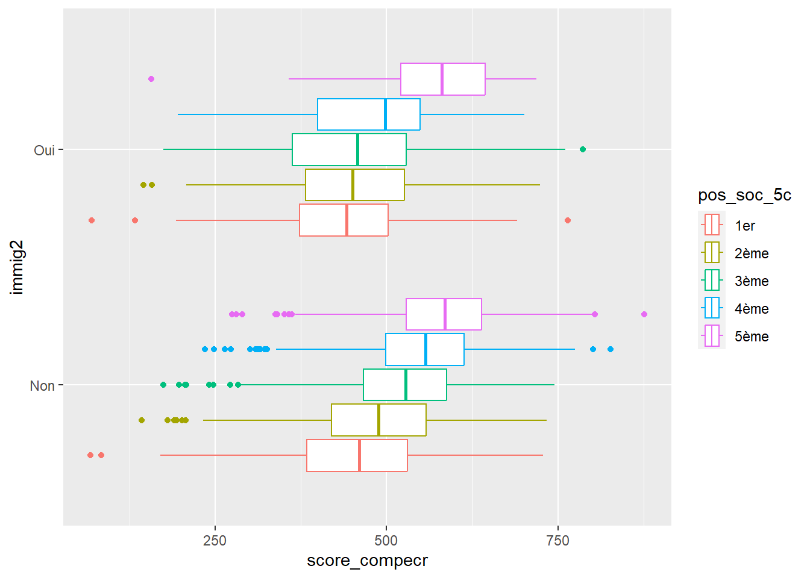

Dans l’enquête PISA, les compétences en mathématiques expriment l’aptitude des élèves de 15 ans à formuler, employer et interpréter des mathématiques dans de multiples contextes, pour décrire, expliquer et prévoir des phénomènes, en comprenant le rôle que les mathématiques jouent dans le monde.
Les compétences à l’écrit expriment la capacité de comprendre, d’utiliser et d’interpréter des textes écrits en vue de réaliser ses objectifs, développer ses connaissances et son potentiel et prendre une part active dans la société. L’indicateur utilisé est le score moyen.
Le statut socio-économique, ou plus précisément le statut économique, social et culturel de l’élève (ESCS) est un indice composite composé à partir de trois indices : le statut socioprofessionnel des parents (basé sur les métiers exercés par les parents), le niveau de formation (nombre d’années d’études) des parents, ainsi que le patrimoine familial. Ce dernier indice inclut lui-même un grand nombre de variables parmi lesquelles les ressources culturelles disponibles dans le foyer (livres), les ressources éducatives (un endroit calme pour travailler, des ouvrages de références ou des logiciels éducatifs) ainsi que d’autres ressources (voiture, connexion internet. . .)
# Chargement des packageslibrary(tidyverse)
-- Attaching core tidyverse packages ------------------------ tidyverse 2.0.0 --
v dplyr 1.1.2 v readr 2.1.4
v forcats 1.0.0 v stringr 1.5.0
v ggplot2 3.4.2 v tibble 3.2.1
v lubridate 1.9.2 v tidyr 1.3.0
v purrr 1.0.2
-- Conflicts ------------------------------------------ tidyverse_conflicts() --
x dplyr::filter() masks stats::filter()
x dplyr::lag() masks stats::lag()
i Use the conflicted package (<http://conflicted.r-lib.org/>) to force all conflicts to become errors
library(questionr)# Chargement des donnéespisa <-readRDS("data/pisa.RDS")
Le score de compétences à l’écrit
Représentation du lien entre la position sociale et le score de compétences à l’écrit
pisa %>%ggplot(aes(x = pos_soc,y = score_maths,weight = poids)) +geom_point() +geom_smooth(method ="lm") +theme_minimal() +lims(x =c(-2, 2)) +labs(title ="Score de compétences à l'écrit selon la position sociale",x ="Indice de position sociale",y ="Score de compétences à l'écrit",caption ="Champ : élèves de 15 ans scolarisé.es en France en 2018 \n Source : PISA 2018 (OCDE) | A. POISSONNIER | 2023" )
# A tibble: 3 x 2
immig m_score_compecr
<fct> <dbl>
1 Non 519.
2 1ère gen 464.
3 2ème gen 423.
Mettre en place un modèle de régression linéaire
## Sans la pondération# On crée un modèlem1 <-lm(score_compecr ~ pos_soc + sexe + immig, data = pisa)# La fonction summary permet de calculer les p-valuessummary(m1)
Call:
lm(formula = score_compecr ~ pos_soc + sexe + immig, data = pisa)
Residuals:
Min 1Q Median 3Q Max
-379.14 -60.69 4.16 65.07 340.84
Coefficients:
Estimate Std. Error t value Pr(>|t|)
(Intercept) 496.665 2.095 237.113 < 2e-16 ***
pos_soc 54.958 1.804 30.460 < 2e-16 ***
sexeFille 43.005 2.788 15.427 < 2e-16 ***
immig2ème gen -60.816 6.678 -9.107 < 2e-16 ***
immig1ère gen -21.605 4.851 -4.454 8.63e-06 ***
---
Signif. codes: 0 '***' 0.001 '**' 0.01 '*' 0.05 '.' 0.1 ' ' 1
Residual standard error: 92.86 on 4444 degrees of freedom
(164 observations effacées parce que manquantes)
Multiple R-squared: 0.2463, Adjusted R-squared: 0.2456
F-statistic: 363 on 4 and 4444 DF, p-value: < 2.2e-16
## Avec la pondération# On utilise le package surveylibrary(survey)
Le chargement a nécessité le package : grid
Le chargement a nécessité le package : Matrix
Attachement du package : 'Matrix'
Les objets suivants sont masqués depuis 'package:tidyr':
expand, pack, unpack
Le chargement a nécessité le package : survival
Attachement du package : 'survey'
L'objet suivant est masqué depuis 'package:graphics':
dotchart
# On crée la base de données pondérée en renseignant le plan d'échantillonnagepisa_w <-svydesign(ids =~1, # Argument pour spécifier s'il l'enquête a été faite par grappesdata = pisa, # Le tableau de donnéesweights = pisa$poids # Les poids )# On utilise la fonction du package# On crée un modèlem1 <-svyglm( score_compecr ~ pos_soc + sexe + immig, # La formule du modèledesign = pisa_w) # Attention, ici c'est le "design" pisa_w qu'il faut indiquer, et non plus le tableau de données pisa# La fonction summary permet de calculer les p-valuessummary(m1)
Call:
svyglm(formula = score_compecr ~ pos_soc + sexe + immig, design = pisa_w)
Survey design:
svydesign(ids = ~1, data = pisa, weights = pisa$poids)
Coefficients:
Estimate Std. Error t value Pr(>|t|)
(Intercept) 493.998 2.266 218.006 < 2e-16 ***
pos_soc 55.582 1.890 29.412 < 2e-16 ***
sexeFille 44.375 2.886 15.375 < 2e-16 ***
immig2ème gen -63.084 8.488 -7.432 1.27e-13 ***
immig1ère gen -23.487 5.543 -4.237 2.31e-05 ***
---
Signif. codes: 0 '***' 0.001 '**' 0.01 '*' 0.05 '.' 0.1 ' ' 1
(Dispersion parameter for gaussian family taken to be 8741.703)
Number of Fisher Scoring iterations: 2
Est-ce qu’une position sociale élevée garantit de bons résultats pour l’ensemble des lycéen·nes ?
# Chez les garçons et chez les fillesm1 <-svyglm( score_compecr ~ pos_soc + sexe*immig, # La formule du modèledesign = pisa_w)summary(m1)
Call:
svyglm(formula = score_compecr ~ pos_soc + sexe * immig, design = pisa_w)
Survey design:
svydesign(ids = ~1, data = pisa, weights = pisa$poids)
Coefficients:
Estimate Std. Error t value Pr(>|t|)
(Intercept) 494.004 2.332 211.846 < 2e-16 ***
pos_soc 55.607 1.890 29.419 < 2e-16 ***
sexeFille 44.361 3.014 14.719 < 2e-16 ***
immig2ème gen -69.229 12.689 -5.456 5.13e-08 ***
immig1ère gen -20.335 8.930 -2.277 0.0228 *
sexeFille:immig2ème gen 12.041 16.697 0.721 0.4709
sexeFille:immig1ère gen -5.841 10.962 -0.533 0.5941
---
Signif. codes: 0 '***' 0.001 '**' 0.01 '*' 0.05 '.' 0.1 ' ' 1
(Dispersion parameter for gaussian family taken to be 8739.096)
Number of Fisher Scoring iterations: 2
# Selon le statut d'immigration# On recode avant en une variable binairepisa <- pisa %>%mutate(immig2 =if_else(immig =="Non", "Non", "Oui"))pisa_w <-svydesign(ids =~1, # Argument pour spécifier s'il l'enquête a été faite par grappesdata = pisa, # Le tableau de donnéesweights = pisa$poids # Les poids )m1 <-svyglm( score_compecr ~ pos_soc*immig2 + sexe, # La formule du modèledesign = pisa_w)summary(m1)
Call:
svyglm(formula = score_compecr ~ pos_soc * immig2 + sexe, design = pisa_w)
Survey design:
svydesign(ids = ~1, data = pisa, weights = pisa$poids)
Coefficients:
Estimate Std. Error t value Pr(>|t|)
(Intercept) 493.776 2.260 218.494 < 2e-16 ***
pos_soc 61.062 2.001 30.520 < 2e-16 ***
immig2Oui -49.275 5.683 -8.670 < 2e-16 ***
sexeFille 44.304 2.876 15.404 < 2e-16 ***
pos_soc:immig2Oui -30.033 5.426 -5.535 3.29e-08 ***
---
Signif. codes: 0 '***' 0.001 '**' 0.01 '*' 0.05 '.' 0.1 ' ' 1
(Dispersion parameter for gaussian family taken to be 8712.105)
Number of Fisher Scoring iterations: 2
Est-ce que la liaison linéaire est la plus pertinente ?
En créant des quantiles, soit des classes d’effectifs qui hiérarchisent la population : les 20% les plus favorisés contre les 20% les plus défavorisés.
# On crée des 5 quantiles de taille équivalente# Obtenir la valeur des quantilesquant_pos_soc <-quantile(pisa$pos_soc, probs =c(0, 0.2, 0.4, 0.6, 0.8, 1), na.rm = T)# On crée une nouvelle variablepisa <- pisa %>%mutate(pos_soc_5c =cut(x = pos_soc, breaks = quant_pos_soc,labels =c("1er", "2ème", "3ème", "4ème", "5ème") ) )# On vérifie le recodagetable(pisa$pos_soc_5c)
1er 2ème 3ème 4ème 5ème
902 896 896 905 889
# Représentation graphique de l'effet de la position sociale selon le statut d'immigration# Il faut d'abord vérifier les effectifstable(pisa$pos_soc_5c, pisa$immig)
Non 2ème gen 1ère gen
1er 637 83 171
2ème 736 45 107
3ème 795 34 65
4ème 817 31 49
5ème 827 16 35
# On refait la base pondérée puisqu'on a ajouté une variable au tableau brutpisa_w <-svydesign(ids =~1, # Argument pour spécifier s'il l'enquête a été faite par grappesdata = pisa, # Le tableau de donnéesweights = pisa$poids # Les poids )# Création des boxplotspisa %>%filter(!is.na(pos_soc_5c) &!is.na(immig2)) %>%ggplot() +geom_boxplot(aes(x = score_compecr,color = pos_soc_5c,y = immig2) )

Modèle de régression linéaire avec effet d’interaction dichotimisé
Finalement, on crée un modèle incorporant les 2 variables de contrôle malgré leur très forte corrélation. Cela viole une hypothèse importante des modèles qui requiert que les variables explicatives ne soient pas colinéaires (corrélées entre elles). Cela se justifie uniquement parce qu’elles servent de variables de contrôle et qu’on ne cherche pas à interpréter la valeur et la significativité de leur coefficient.